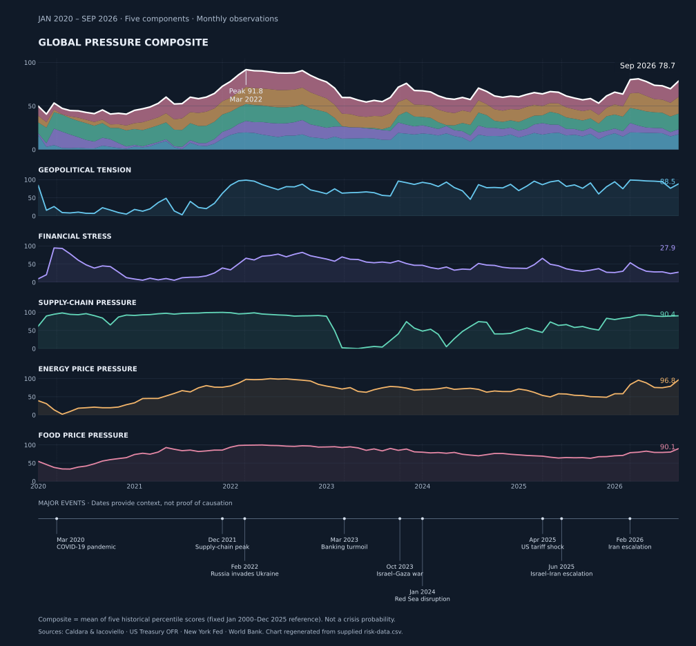

Growth
—
Created and managed by Felix Beacher, PhD
To provide a range of economic and financial indicators, to help you understand the context and outlook for the medical imaging sector.
The economic picture
Four signals to help put medical imaging investment, budgets and supply decisions in context. Select a region in the economic outlook below to update the growth and inflation figures.
—
—
—
—
The indicators have different dates and geographical coverage. IMF figures include estimates; the global risk measure is a fixed historical snapshot, not a live forecast.
Two US benchmarks that help explain the cost of finance and the prices paid by patients for medical care.
These are US measures, not the actual interest rate a hospital would pay or the price of buying and running imaging equipment.
For UK decisions, check Bank of England Bank Rate, ONS consumer-price data.
Global historical context
Five complementary indicators track geopolitical tension, financial stress, supply chains, energy and food prices. The composite is an equal-weight average of historical percentile scores—not a crisis probability or a forecast.
What it measuresHow unusually high these pressures are compared with their own past.
Why it matters for imagingGlobal disruptions can affect equipment deliveries, hospital costs and access to finance.
Each score runs from 0 to 100. It is not the chance of a future crisis.

Latest composite
—
Change from previous month
—
Peak in the displayed period
—
Open any pressure to see what it measures and its connection to imaging.
Here is how the economic picture could affect choices about imaging equipment and services. These are questions to investigate, not proven predictions.
Signals to check Economic growth, borrowing rates and inflation.
Possible implication Costlier borrowing or tighter budgets may delay equipment replacement or expansion.
Next check Local capital budgets, lease terms, procurement approvals and scanner age.
Signals to check Supply-chain pressure and geopolitical events.
Possible implication Delays or higher component costs may affect installation and service.
Next check Vendor delivery commitments, parts coverage and maintenance contracts.
Signals to check Local energy, staffing and general inflation.
Possible implication Rising running costs can erode the value of a flat hospital budget.
Next check Local utility tariffs, staffing budgets, equipment uptime and contract indexation.
Signals to check CT, MRI and PET equipment availability and utilisation.
Possible implication Economic conditions alone cannot tell us whether a region needs more scanners.
Next check OECD medical technology availability data; check country definitions and observation years.
Explore annual OECD data for CT, MRI and PET examinations and the availability of scanners. Choose a country and a scanner type. Missing observations are not filled or estimated.
These series use different units and may cover different provider settings. They cannot, on their own, prove shortages, unused capacity, clinical demand or access to timely scanning. Data availability varies between countries and years.
Explore how inflation changes a nominal annual budget increase. Defaults illustrate the calculation; they are not forecasts or observed data.
Implied change in purchasing power
A budget increase does not always buy more if prices are rising too. Use inflation that reflects imaging costs, not just ordinary household prices.
An optional investor perspective: these are broad global share-market indicators, not evidence about the value of a scanner or an individual imaging company.
| Measure | What it measures | Why it matters | Main limitation |
|---|---|---|---|
| P/E and CAPE | Share prices compared with profits, sometimes averaged over several years. | Shows how highly investors value businesses. | Growing companies may deserve higher ratios, and future profits are uncertain. |
| Price-to-book and price-to-sales | Share prices compared with the assets or sales recorded by companies. | Offers other ways to compare imaging manufacturers and software businesses. | Research, software and brand value can be missed; sales do not show profits. |
| Company value and cash flow | Business value, including debt, compared with money generated by operations. | Cash generation matters for funding research, new equipment and service commitments. | Some measures leave out important costs, and definitions vary. |
| Dividends and inflation | Cash paid to shareholders compared with price rises. | Helps put investment income and purchasing power into context. | Dividends can fall and are only part of the return. |
| Shares compared with gold | How shares have changed in value relative to gold. | Offers another view of investor confidence and market conditions. | Currency choices and dividends can change the result. |
| Stock-market value compared with GDP | The value of listed shares compared with the size of an economy. | Gives broad context for whether shares look expensive. | Many businesses are private and listed companies earn money abroad. |
Economic figures are checked when the dashboard refreshes, but the latest published readings may be older. The risk chart is a fixed historical snapshot whose original percentile calibration has not been independently verified. Regional figures show the middle value for selected countries, not all countries in the region.
The imaging commentary was reviewed on 17 October 2026. Share-market figures have their own dates. The market-value-to-GDP comparison is annual, and global fund figures use the dates supplied by the data provider. Historical comparisons are not predictions.
Each risk component is scored against a fixed January 2000–December 2025 reference of 312 monthly observations: 100 × (observations below the current value + half the ties) / 312. The composite averages the five scores; it is not itself a historical percentile. OFR daily observations are averaged by month. The supplied chart data have complete monthly coverage, with no interpolation or forward filling.
The scores use past observations; they have not been proven to predict crises. Energy and food prices are not adjusted for inflation. Giving all five measures the same weight is simple but untested. Some may measure similar problems, while others may hide a crisis affecting one region. Climate events, cyberattacks, government debt problems and currency instability are not measured separately.
Scores and commentary are independent analytical work. Source organisations do not endorse the composite. The chart has been regenerated from the supplied five-component CSV; the underlying calibration observations were not supplied, so the percentile transformations have not been independently reconstructed.